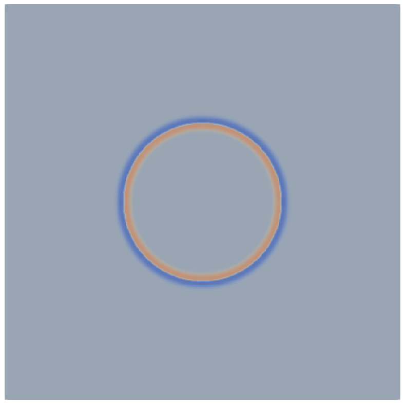
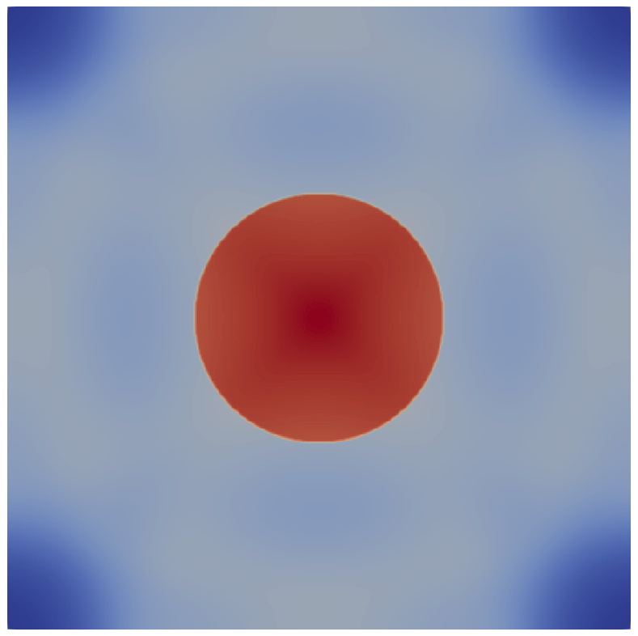

|
Peano
|
|
Peano
|
The shallow water equations describe the flow of fluid given the assumption that the horizontal length scale is much higher than the vertical length scale and are defined by the following formula:
\( \frac{\partial}{\partial t}\left( \begin{array}{lr} h \\ h u_1 \\ h u_2 \\ b \end{array} \right) + \nabla \begin{pmatrix} h u_1 & h u_2 \\ h u_1^2 & h u_1 u_2 \\ h u_2 u_1 & h u_2^2 \\ 0 & 0 \end{pmatrix} + \begin{pmatrix} 0 & 0\\ h g*\partial_x(b+h) & 0\\ 0 & h g*\partial_y(b+h) \\ 0 & 0 \end{pmatrix} = \vec{0} \)
With eigenvalues:
\( \left( \begin{array}{lr} \lambda_1 \\ \lambda_2 \\ \lambda_3 \end{array} \right) = \left( \begin{array}{lr} u + \sqrt{g (h+b)} \\ u \\ u - \sqrt{g (h+b)} \\ \end{array} \right) \)
These depend on the fluid height h, velocities in x- and y-directions, the bathymetry b (the height of the floor underneath the fluid) and the gravity g.
To implement this equation, the following things are needed: the initial condition, the boundary conditions, the maximal eigenvalue, the flux, the non-conservative term and (optionally) the refinement criterion.
We also have an auxiliary variable since the bathymetry never changes. We can define this auxiliary variable by setting the parameter for the auxiliary variables in the solver to 1. These auxiliary variables are accessed in the same way as the regular variables, except that they are not modified by the solver. Initial- and boundary conditions for these auxiliary variables should be defined, but no flux or non-conservative product can be set, as they can never change anyway.
We start with the initial conditions: For this, we want the initial water height to be 1.0 everywhere, the initial velocities to be 0.0 everywhere and the bathymetry should be 0.0 in a radius of 0.40 around the center of the domain, 0.1 anywhere else.
Then we can define our boundary conditions. For this simple case, we will simply use reflecting boundary conditions. This means all values except the momenta will be the same outside of the as inside of it.
Next, we can define the eigenvalues of our system. This is important because the largest eigenvalue defines the behaviour of the PDE, and among others the maximum allowable timestep for which the solver remains stable. Since the maximal eigenvalue is dependent on the velocity, you will need to take into account the normal direction as this will determine whether you should use the velocity in the x- or y-direction to compute it. For the gravity g, you can use 9.81 m/s^2.
Now, let's define our flux in x- and y-direction. The directions of the flux are defined by the normal parameter. This parameter defines through which surface, and therefore in which direction, the flux is being computed. Here if the normal is 0, we are computing the flux in x-direction and if the normal is 1, we are computing the flux in y-direction. For higher dimensions, there would logically be additional directions to implement the flux.
Finally, we fill in the non-conservative part in the function nonconservativeProduct. This needs to go into the variable BTimesDeltaQ. This function has a parameter deltaQ through which you can access the space derivatives of the unknowns and auxiliary variables in the direction defined by the normal's current value.
| t=0.0 s | t=1.0 s |
|---|---|
 |  |
The computed height of the fluid according to our computation of the shallow water equations at times t=0.0 s and t=1.0 s. The fluid has rushed in from the sides to fill the depression at the center.
If you've completed the implementation, you may have noticed that the resolution is somewhat low. We're interested in increasing the resolution so we can see more details in the solution. This means we need to consider our volume size, so in the first step, we will discuss how the volume size is calculated.
This determines the maximal allowable size for volumes in our domain, in essence guaranteeing \( max\_volume\_h > volume\_size \). However, since Peano is based upon three-partitioning, it refines the domain into \( 3^d \) volumes, where d is the smallest possible integer that satisfies \( max\_volume\_h > domain\_size / 3^d \). For our tutorial, we have set a domain size of 2.0 in each direction and \( max\_volume\_h = 0.05 \). The first three-partition of 2.0 that is lower than 0.05 is \( \frac{2.0}{3^4}\approx0.0247 \). This means that there are a total of 3^4=81 volumes in each dimension. Of these, two are used for the boundary conditions, which means there are a total of 79 volumes per dimension inside the domain. In total, that makes 79*79=6241 volumes inside the domain, or (with a parameter \( max\_volume\_h = 0.02 \)) 241*241=58081 volumes in two dimensions, an increase of factor 9. However, because the smallest admissible timesteps are proportional to the size of the mesh, the overall computational effort increases by a total factor of about 27.
In short, if one wishes to increase or decrease the mesh size, one can just modify the parameter \( max\_volume\_h \), but one should be aware that this comes at a significant cost. You may have noticed that there is a second parameter \( min\_volume\_h \) however, and this parameter logically determines the minimal mesh size. If this parameter is given a value lower or equal to \( max\_volume\_h / 3 \) (again, three-partitioning), adaptive refinement is switched on, this means the volume size need not be the same in the entire domain.